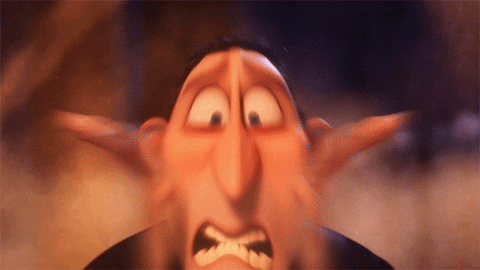
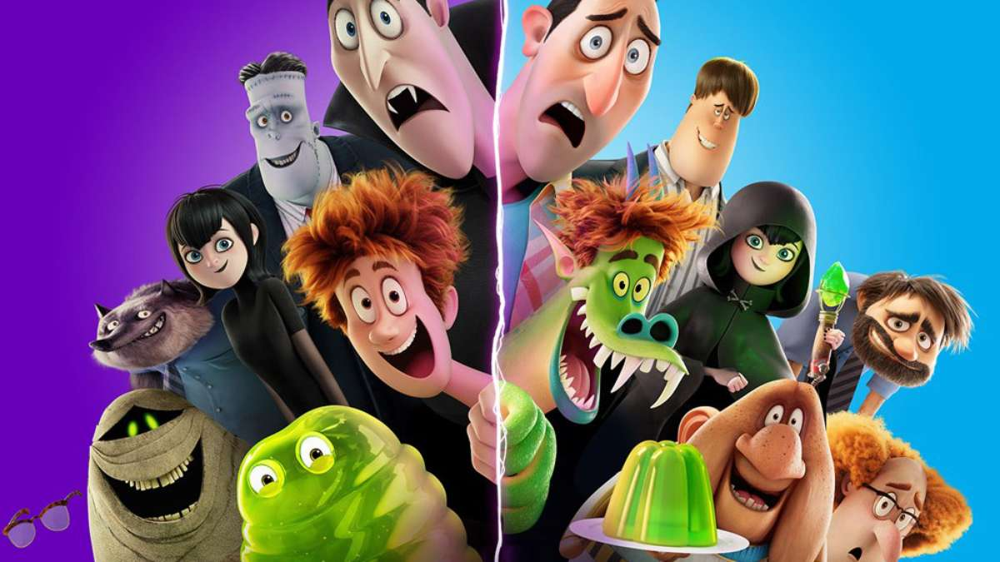

Opa! Você está na página inicial do site. Aqui você pode ver coisas básicas sobre o filme.
"Hotel Transilvânia 4", também conhecido como Transformonstrão (ou Transformania no original), é aquele tipo de animação que mistura comédia maluca, aventura e aquele toque de coração que a gente curte. É o quarto e último filme da franquia, e dessa vez eles vieram com uma ideia bem divertida: os monstros viram humanos e os humanos viram monstros.
Descubra o que você não pode ver no filme aqui em nosso site de curiosidades/informações. Seja muito bem-vindo!

Informações
1️⃣ A história gira em torno do Drácula, que está prestes a passar o controle do Hotel Transilvânia para o seu genro Johnny — só que, como sempre, as coisas saem do controle!
2️⃣ Johnny, animado pra se encaixar de vez na família monstruosa, acaba usando um raio que o transforma em monstro. Só que o raio dá ruim e transforma o Drácula em humano!
3️⃣ E aí começa a jornada deles pra tentar reverter tudo antes que seja tarde demais!

Curiosidades
🧛♂️ O Drácula mudou de voz!
Nos três primeiros filmes, quem fazia a voz do Drácula (em inglês) era o ator Adam Sandler. Mas no quarto filme, ele não voltou pro papel. Quem assumiu a voz do Drac foi Brian Hull, um dublador famoso na internet por imitar personagens da Disney e fazer vozes caricatas.
A mudança rolou por questões criativas e contratuais, já que o estúdio quis dar uma "nova cara" (ou melhor, nova voz) pro personagem nessa despedida da franquia.
Curioso, né? E apesar da mudança, o Hull mandou bem imitando o estilo do Sandler, então muita gente nem percebe logo de cara.
Personagens
🧛♂️ Drácula (ou “Drac”)
👨🦰 Johnny (Jonathan Loughran)
🧛♀️ Mavis
🧟♂️ Frank (Frankenstein)
🐺 Wayne (O Lobisomem)
🧞 Murray (A Múmia)
🦠 Griffin (O Homem Invisível)
🧪 Van Helsing
Esses são alguns personagens importantes desse filme.